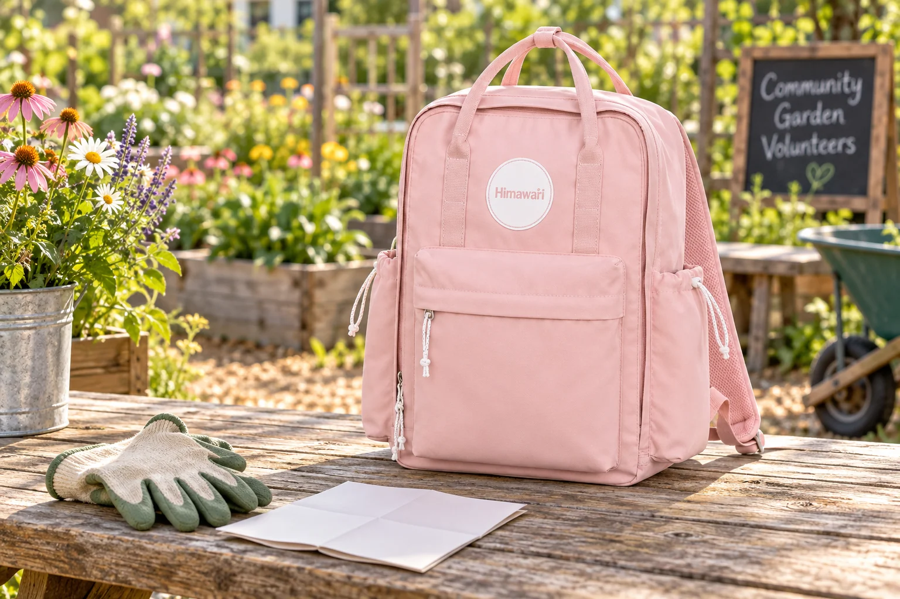

정원 봉사의 작업 짐과 개인 짐 사이

동네 정원 봉사에 가면 백팩을 자주 여는 시간이 작업 전과 작업 뒤로 모입니다. 시작할 때는 장갑과 필요한 개인 물건을 꺼내고, 끝난 뒤에는 흙이나 물기가 남은 것을 다시 운반해야 합니다. 아침에 반듯하게 담긴 묶음을 그대로 되돌리기 어려울 수 있는 날입니다. 작업에 사용할 물건과 일상 소지품을 미리 구분하면 작업 중 가방을 반복해서 만지지 않아도 되고, 귀가 뒤 꺼낼 범위도 분명해집니다.
준비는 주최 측 안내에서 시작합니다. 장소와 집결 시간뿐 아니라 제공하는 도구, 개인이 가져갈 물건, 짐을 둘 위치를 확인합니다. 참여 경험이 있다고 같은 도구를 가져가도 된다고 생각하지 않습니다. 특히 도구의 운반이나 사용에 별도 안내가 있다면 그것을 따릅니다. 현장에서 사용할지 확실하지 않은 물건을 추가하기보다 안내받은 묶음만 준비하면 작업대에 펼칠 짐의 범위를 정할 수 있습니다.
장갑을 꺼내기 전에 정할 것
개인 장갑을 가져가야 한다면 사용 전 묶음과 사용 뒤 돌아올 묶음을 함께 준비합니다. 장갑을 넣을 별도 봉투나 주머니를 챙겨두면 작업을 마친 뒤 깨끗한 물건과 바로 섞지 않아도 됩니다. 주머니를 백팩에 둘지 별도로 들지 판단할 때는 실제 장갑과 작업 안내를 봅니다. 돌아오는 물건의 상태를 지금 정확히 알 수는 없으므로 담을 공간만 미리 비워두기보다 분리해 운반할 방법을 생각하는 편이 낫습니다.
휴대전화와 열쇠, 개인 안내 자료는 작업 중에 필요한 도구와 다른 묶음으로 둡니다. 출석 확인이나 집결 안내를 보여준 뒤에는 닫힌 위치로 돌려놓을 수 있습니다. 작업 중 연락 도구가 필요할 경우 어떻게 꺼낼지는 장소의 운영 방식에 따라 정하세요. 흙이 묻은 장갑으로 가방의 여러 칸을 계속 열지 않아도 되도록, 개인 물건을 사용하는 시점과 돌아갈 자리를 출발 전에 생각해볼 수 있습니다.
현장에 도착하면 백팩을 둘 곳부터 확인합니다. 화단의 빈 가장자리나 작업대 아래가 보이더라도 실제 보관이 허용되는지는 주최 측 안내를 따릅니다. 사람의 이동이나 물을 쓰는 동선과 겹치는지 살피고, 작업 구역을 옮길 때 가방도 가져가야 하는지 알아둡니다. 시작할 때 필요한 묶음을 꺼낸 뒤에는 나머지 짐을 닫아두면 작업 도구와 개인 소지품이 섞이는 일이 줄어듭니다.
Himawari No.1089 제품 정보의 핑크 모델은 개인 가방을 검토할 때 참고할 수 있는 제품입니다. 정원 작업 도구를 모두 담는 역할보다 작업 전후에 쓸 개인 소지품을 남기는 역할을 먼저 생각할 수 있습니다. 실제 필요한 묶음을 담아본 뒤 장갑용 봉투와 개인 자료를 따로 꺼낼 수 있는지 살펴보세요. 날카롭거나 특별한 취급이 필요한 도구는 백팩의 빈자리에 임의로 넣기보다 주최 측이 안내한 운반 방법을 따릅니다.
작업하는 동안 가방을 열 때
잠깐 쉬는 동안 개인 물건을 꺼냈다면 작업 도구 위에 함께 올려놓지 않고 정한 위치로 돌려놓습니다. 휴대전화를 사용한 뒤 장갑과 같은 봉투에 넣지 않도록 두 묶음을 유지하세요. 음료나 종이 안내가 있다면 서로 닿는 면을 살펴보고 실제 용기의 닫힘을 확인합니다. 작업하면서 필요한 물건이 늘어난다면 가방을 추가 보관함처럼 쓰기 전에 그 물건이 개인 물건인지 공용 물건인지 구분할 수 있습니다.
다른 참여자와 비슷한 장갑이나 도구를 사용하는 경우에는 개인 물건이 어떤 것인지 알아둘 필요가 있습니다. 표시를 둘 수 있는지 주최 측 안내를 확인하고, 공용 도구에 개인 표식을 임의로 붙이지는 않습니다. 잠시 빌린 도구가 있다면 작업이 끝날 때 반환할 장소를 알아둡니다. 백팩에 임시로 넣어두면 자신의 짐과 섞일 수 있으므로 현장에서 안내된 도구 보관 위치를 사용하는 편이 정리 범위가 분명합니다.
마친 물건의 돌아갈 자리
작업을 마치면 개인 장갑과 공용 도구를 먼저 나눕니다. 공용 도구는 주최 측 안내에 따라 정리하고 반환합니다. 개인 물건은 현재 상태를 보고 깨끗한 소지품과 분리해 운반하세요. 흙이 많이 남았거나 물기가 있는 물건이라면 출발 때 준비한 봉투를 바로 쓰는 것이 적절한지 확인하고 필요한 경우 다른 방법을 문의할 수 있습니다. 귀가 가방에 모두 넣는 것을 목표로 두기보다 실제 상태에 맞는 분리가 우선입니다.
현장에서 가방 표면이 더러워졌다면 바로 강하게 문질러 닦기보다 제품 관리 표시를 보고 정리할 방법을 확인합니다. 작업용 물이나 도구가 있다고 가방에도 사용할 수 있는 것은 아닙니다. 임시로 털어낼 수 있는 먼지와 집에서 별도로 관리할 부분을 구분할 수 있습니다. 나오기 전에 가방을 둔 자리와 작업대 주변에 개인 물건이 남았는지 보고, 별도로 운반할 장갑 봉투가 있다면 짐의 개수에 포함합니다.
집에 돌아오면 작업용 묶음부터 꺼냅니다. 장갑과 주머니의 관리 안내에 맞춰 정리하고, 백팩 안쪽에 흙이나 잎 조각이 남았는지 살펴봅니다. 작업용 봉투를 넣었던 자리에는 다음날의 종이나 옷을 바로 넣기 전에 남아 있는 것이 없는지 확인하세요. 개인 소지품을 원래 자리로 되돌리면 백팩이 봉사 당일의 가방에서 다시 평소 외출 가방으로 돌아옵니다. 공용 물건이 섞여 왔는지도 마지막으로 봅니다.
다음 봉사에 참고할 목록에는 실제 사용한 물건과 쓰지 않은 물건을 나누어 적을 수 있습니다. 작업 내용이 달라지면 제공 도구도 달라질 수 있으므로 이번 목록은 다음 공지와 대조할 자료로 둡니다. 가방을 찾기 어려웠던 이유가 보관 위치인지, 장갑을 꺼낼 때 다른 소지품이 함께 움직였기 때문인지 구체적으로 남겨보세요. 그에 맞춰 개인 짐의 자리나 사용한 물건의 운반 묶음을 바꾸면 다음 준비도 필요한 범위로 정리할 수 있습니다.